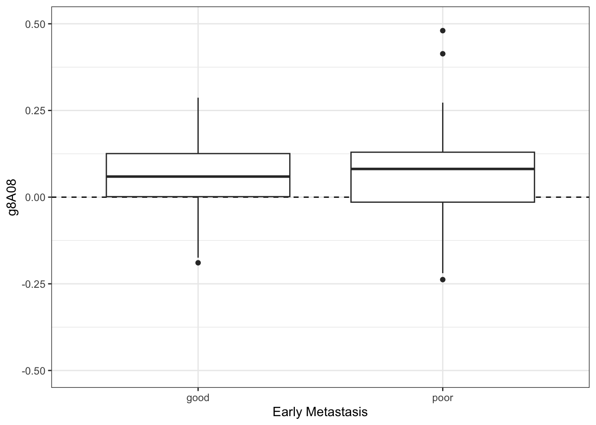

Code Styling
This is a condensed primer on code styling, based on The tidyverse style guide
Why?
“Good coding style is like correct punctuation: you can manage without it, butitsuremakesthingseasiertoread” source
It is not uncommon in a bio data science industry setting, where there is an aspect of production code, i.e. the code you are writing is being used professionally by other users either in an organisation or as an actual software product, that you will have to adhere to a certain style, when coding. This facilitates lower maintanence on code. Imagine the case, where you are perhaps 10 bio data scientists working on e.g. an R-package, which will used downstream by another department. You really need to make sure, that everything is top notch, so you decide to do code reviewing. You write your code up and then your colleague will go over the code to check it. But you and your colleague have completely different opinions on how the code should be styled. This will result in an unnecessary time overhead. Another case, could be a colleague leaving for another position, where you then have to take over that colleague’s code base and you end up re-styling the code, so it matches your preferences, again this will increase maintenance unnecessarily. The solution is to agree on a set of rules and principles on how to style your code - This is code styling!
Below follows the code styling you will have to adhere to in this course
So, how should we style the code?
In this course, we will use principles from the The tidyverse style guide. At first, it may seem constraining, but you will quickly get used to it and then it will be easier moving forward. Note, for your project, being able to review consistant code, will save you valuable time!
Recall the cancer_data (gravier) dataset, we worked with:
library("tidyverse")
library("curl")
base_url <- "https://github.com/"
target_file <- "ramhiser/datamicroarray/raw/master/data/gravier.RData"
output_file <- "data/gravier.RData"
curl_download(url = str_c(base_url,
target_file),
destfile = output_file)Principles:
- Quote the packages you load using the
library-function - Use the proper variable assignment in
R, namely<- - Stay within 80 characters width. Note, you can set a “help line”:
Tools\(\rightarrow\)Global Options...\(\rightarrow\)Code\(\rightarrow\)Display\(\rightarrow\)Show margin\(\rightarrow\)Margin column: 80 - Use double quotes. This is for consistency with other languages
- Tab out parameters of functions
- Do line breaks after commas
- Do one space on each side of
=, when assigning arguments to parameters, e.g.my_function(parameter_1 = argument_1), etc. - Match indentations, this RStudio will do for you in most cases
Ok, a bit of data wrangling:
load(file = "data/gravier.RData")
cancer_data <- gravier |>
bind_cols() |>
rename(early_metastasis = y) |>
mutate(pt_id = str_c("pt_", row_number()),
pt_has_early_metastasis = case_when(
early_metastasis == "good" ~ "No",
early_metastasis == "poor" ~ "Yes"))Principles:
- Line break after each pipe
|>, recall we prononuce the pipe as “then” - Line break after commas inside functions, such as here with
mutate() - If the line in
mutate()becomes wide, then consider using a single linebreak after opening the function call - use proper descriptive variable names in snake case like
pt_has_early_metastasis, there is no overhead in understanding what this variable means
Let’s do a simple plot:
cancer_data |>
ggplot(aes(x = early_metastasis,
y = g8A08)) +
geom_hline(yintercept = 0,
linetype = "dashed") +
geom_boxplot() +
scale_y_continuous(limits = c(-0.5, 0.5)) +
theme_bw() +
labs(x = "Early Metastasis")
Principles:
- Linebreak after
+, just like with the pipe - Space after comma inside a vector, like when we define the
limits
Do it - It’ll be fun and it does not take a long time to adapt!